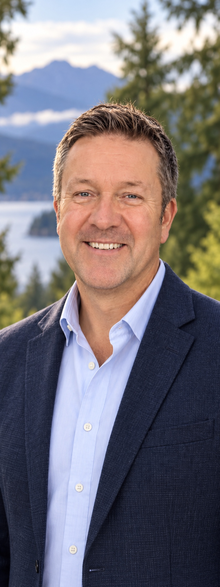

Safety and responsible planning
Require credible plans for traffic, evacuation, emergency response, water, infrastructure and essential services before approving major development.
Rod Rempel for Anmore Council
Before major development is approved, residents deserve clear answers about traffic, emergency access, evacuation, infrastructure, services and costs.

Rod's priorities
Three commitments for safe, responsible decisions about Anmore's future.
Require credible plans for traffic, evacuation, emergency response, water, infrastructure and essential services before approving major development.
Preserve Anmore's natural environment and semi-rural character while ensuring future growth respects the scale and needs of the community.
Give residents clear information, meaningful opportunities to be heard and honest explanations of the costs, risks and long-term consequences.
“Anmore is more than where I live. It's the community I chose, the people I care about, and the place I want to protect.”
Rod Rempel
Meet Rod
Rod has called Anmore home for ten years. He loves its forests, lakes, village character, and the strong sense of community that connects neighbours here.
He has not watched from the sidelines. As a community advocate, Rod has brought residents' concerns about development, infrastructure costs, traffic, emergency access, and Anmore's future directly before council.
In his professional life, Rod has worked alongside large-scale planners and developers and managed the construction of major projects across Western North America. That experience has taught him that growth must be carefully planned before it is approved, with safe roads and emergency access, infrastructure that can support it, clear costs, and meaningful public input.
Rod is running because Anmore needs councillors who will listen carefully, work constructively with others, and protect the long-term interests of the whole village.
Where Rod stands
The Anmore South proposal demonstrated how much is at stake when development could fundamentally reshape the village. Any future proposal for these lands must be evaluated for traffic, safe evacuation, emergency access, water and servicing capacity, environmental effects, public costs and meaningful resident input.
If the safety, infrastructure and financial questions have not been answered clearly, council should not approve the proposal.
Talk to Rod about Anmore's futureHow Rod will serve
Council should understand the risks, capacity and long-term costs before committing the community to major change.
Evaluate traffic, emergency access and evacuation capacity at the beginning of the process.
Test infrastructure needs, servicing capacity, environmental effects, costs and assumptions.
Give residents clear information and a meaningful opportunity to shape decisions before council commits.
Make your voice count
General Voting Day is Saturday, October 17, 2026. Official voting locations and advance voting details will be published by the Village of Anmore.
Be part of the campaign
Volunteer, request a lawn sign, or talk with Rod about Anmore's future.
Campaign email will be confirmed before public launch.